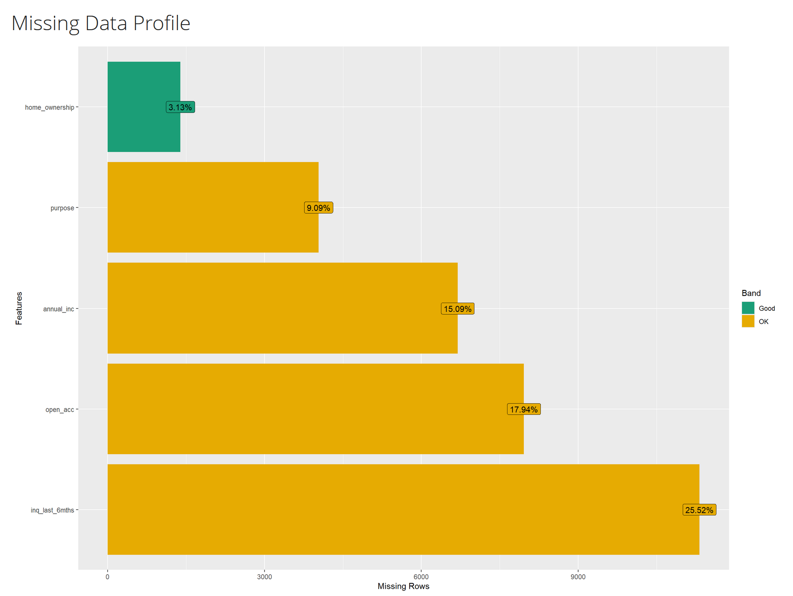
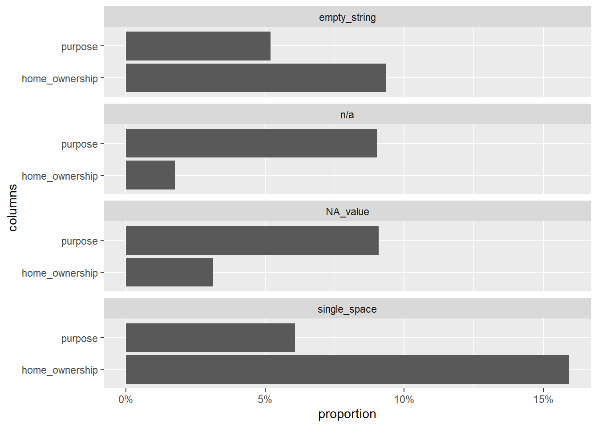

if (!require(dplyr)) install.packages("dplyr")
if (!require(tidyr)) install.packages("tidyr")
if (!require(data.table)) install.packages("data.table")
if (!require(DataExplorer)) install.packages("DataExplorer")
if (!require(ggplot2)) install.packages("ggplot2")
library(dplyr)
library(ggplot2)
library(tidyr)
library(data.table)
library(DataExplorer)TSAR Project Assignment Part2 - Group 3
Introduction
Data Wrangling with dplyr and tidyr
Package installation
Task 1: Exploratory Data Analysis
Result from DataExplorer::create_report()

Task 2: Data Wrangling and Visualization
Rows: 44,369
Columns: 5
$ annual_inc <dbl> 60000, 18576, NaN, 35000, 125000, 144000, 205000, 11800…
$ open_acc <dbl> 6, NaN, 15, 3, NaN, 8, 9, 18, NaN, 3, 11, 10, 15, 5, Na…
$ purpose <chr> "credit_card", "", "small_business", "home_improvement"…
$ home_ownership <chr> "OWN", "RENT", "RENT", "OWN", "RENT", " ", "MORTGAGE", …
$ inq_last_6mths <dbl> 0, NA, 2, 1, NA, NA, 0, 0, NA, 0, 0, NA, NA, 0, 0, 0, 1…Classes 'data.table' and 'data.frame': 44369 obs. of 5 variables:
$ annual_inc : num 60000 18576 NaN 35000 125000 ...
$ open_acc : num 6 NaN 15 3 NaN 8 9 18 NaN 3 ...
$ purpose : chr "credit_card" "" "small_business" "home_improvement" ...
$ home_ownership: chr "OWN" "RENT" "RENT" "OWN" ...
$ inq_last_6mths: num 0 NA 2 1 NA NaN 0 0 NaN 0 ...
- attr(*, ".internal.selfref")=<externalptr> annual_inc open_acc purpose home_ownership
Min. : 4000 Min. : 1.00 Length:44369 Length:44369
1st Qu.: 45931 1st Qu.: 8.00 Class :character Class :character
Median : 65000 Median :11.00 Mode :character Mode :character
Mean : 75314 Mean :11.58
3rd Qu.: 90000 3rd Qu.:14.00
Max. :6000000 Max. :76.00
NA's :6694 NA's :7962
inq_last_6mths
Min. : 0.0000
1st Qu.: 0.0000
Median : 0.0000
Mean : 0.6951
3rd Qu.: 1.0000
Max. :31.0000
NA's :11321 | Variable | Explanation |
|---|---|
| annual_inc | numerical |
| open_acc | numerical |
| purpose | categorical |
| home_ownership | categorical |
| inq_last_6mths | numerical |
Empty categorical features can contain the following values:
NAor Not Available: Indicates missing values that R recognizes as missing.- The string
"n/a": We pretend this string was used in the source data set to indicate missing data. Since it is a string R does not recognize it as missing. - A space
" ": Another special string. - The empty string
"": Another special string.
Empty numerical features can contain the following values:
NA: Standard missing values.NaNor Not a Number: Results from invalid computations such as 0/0.- Outliers: These were actually not ingested but already present in the data. There is no rigid mathematical definition of what constitutes an outlier. In this task we use Tukey’s fences. We count values as outliers if they lie outside the whiskers of the boxplot.
Overall NA per feature
annual_inc open_acc purpose home_ownership inq_last_6mths
1 6694 7962 4033 1390 11321Categorical features (purpose, home_ownership)
# old testings
# myLCdata_dirty %>% summarise(distinct_count = n_distinct(purpose,na.rm = FALSE))
# myLCdata_dirty %>% group_by(purpose) %>% summarise(values_recorded = n())
# myLCdata_dirty %>% group_by(purpose) %>% summarise(values_recorded = n()) %>% filter(purpose == " " | purpose == "" | purpose == "n/a" | is.na(purpose))
# myLCdata_dirty %>% group_by(home_ownership) %>% summarise(values_recorded = n()) %>% filter(home_ownership == " " | home_ownership == "" | home_ownership == "n/a" | is.na(home_ownership))
# myLCdata_dirty %>% group_by(purpose) %>% summarise(values_recorded = n()) %>% filter(purpose == " " | purpose == "" | purpose == "n/a" | is.na(purpose)) %>% summarise(total_missing = sum(values_recorded))
# myLCdata_dirty %>%
# filter(if_any(where(is.character), ~ . %in% c(" ", "", "n/a") | is.na(.))) %>%
# select(purpose, home_ownership) %>%
# group_by(purpose, home_ownership) %>%
# count()myLCdata_dirty_values_categorical <- myLCdata_dirty %>%
select(purpose, home_ownership) %>%
pivot_longer(cols = everything(), names_to = "columns", values_to = "empty_value") %>%
filter(if_any(everything(), ~ . %in% c(" ", "", "n/a") | is.na(.))) %>%
mutate(empty_value = case_when(
empty_value == "" ~ "empty_string",
empty_value == " " ~ "single_space",
is.na(empty_value) ~ "NA_value",
empty_value == "n/a" ~ "n/a"
)) %>%
group_by(columns, empty_value) %>% summarise(dirty_value_count = n()) %>%
pivot_wider(names_from = empty_value, values_from=dirty_value_count) %>%
mutate(across(where(is.numeric), ~. / nrow(myLCdata_dirty)))
head(myLCdata_dirty_values_categorical)# A tibble: 2 × 5
# Groups: columns [2]
columns NA_value empty_string `n/a` single_space
<chr> <dbl> <dbl> <dbl> <dbl>
1 home_ownership 0.0313 0.0935 0.0176 0.159
2 purpose 0.0909 0.0520 0.0903 0.0608ggplot_data_categorical <- myLCdata_dirty_values_categorical %>%
pivot_longer(cols=-columns, names_to = "empty_value", values_to = "proportion")
ggplot(ggplot_data_categorical) +
geom_col(aes(x = columns, y = proportion)) +
coord_flip() +
scale_y_continuous(labels = scales::percent) +
facet_wrap(~empty_value, ncol = 1)